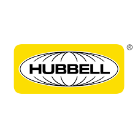

Sonali Mahendrakar
" Learn Grow Develop"
About Me
Hi, I am Sonali Mahendrakar, currently pursuing Master's degree in Computer Science at George Mason University Fairfax, VA, USA, with 3+ years of Software Development experience.
I am a passionate developer who is always looking to learn, grow and tackle new challenges.
My Skills
Languages: Java, Python, JavaScript, MySQL, C & C++.
Frameworks: Node JS, React JS, Angular, REST APIs, Docker.
Databases: MySQL, MongoDB, PostgreSQL
Testing: Junit, Mockito, PostMan
Others: Linux, Git, HTML & CSS, JSON, XML, JSP, Microservices.
Cloud: AWS (Dynamo DB, S3, EC2, IAM, RDS, ECS, CloudWatch, Lambda).
Concepts:Data Structures & Algorithms, Object Oriented Programming, Machine Learning, Artificial Intelligence, Web Development, Operating Systems.
Work Experience

Hubbell Inc. Software Engineer Intern
- Led the seamless migration of Scala-based functionalities to Java within the Analytical Engine project, a 12-year-old monolithic codebase, utilizing SDLC and agile methodology. Achieved significant enhancements in data processing speed while concurrently refactoring the codebase to reinforce maintainability, resulting in an impressive 35% increase in overall project efficiency.
- Incorporated Spring Security for secure authentication and authorization, ensuring protected access to resources.
- Enhanced overall application performance by optimizing database query execution, and meticulously examined the endpoints using JUnit and Postman to validate functionality and handle edge cases, ensuring that the API system maintains an efficacy rate of over 80%.
- Applied DevOps practices and CI/CD pipelines in Azure cloud-based environments, showcasing proficiency in GIT for source control and a range of tools such as Jenkins Pipeline.

George Mason University Graduate Teaching Assistant
- Teaching Assistant for Cloud Infrastructure, Cloud Services Management, Big Data on Cloud Systems Responsibilities in AWS, Azure, GCP and it included optimizing course content, assessing assignments, and providing office hours support for a cohort of 100+ students.
- Additionally, offering real-time troubleshooting and programming solutions that led to a 90% pass rate and a 25% improvement in overall academic performance.
George Mason University Graduate Teaching Assistant
- Developed a full stack application, Employee Resource Information Center by implementing React.js for the frontend and Node.js with Express.js for the backend, with MongoDB for data storage and management.
- Implemented JSON Web Tokens -based authentication and utilized D3.js for insightful data visualizations, designed this intuitive dashboard with dynamic filtering and CRUD functionalities, and ensured responsive design, deploying the application on AWS using Docker containers for scalability and reliability.
Cognizant Technology Solutions Software Engineer
- Involved in analysis, design, implementation, and testing phases of SDLC and used agile methodology.
- Worked on both the back end and front-end of systems and catered to both user experience and functionality in projects.
- Enterprise Notification System: Worked on the development and testing of automated emails for iOS using AEM, maintained across Android platforms and Oracle SQL Developer, resulting in a 15% improvement in user engagement, while also managing 3 modules for a global user base with Java, Spring Boot and TestNG, enhancing system reliability and scalability.
- Created a pipeline in Jenkins to reduce 30% redundant tasks and performed problem resolution with root cause analysis.
- Performed database validation in Oracle SQL Developer to increase the accuracy by 25%.
- Pricing in FedEx: Led the design and testing of a FedEx GUI using Java, Spring Boot and JavaScript resulting in a 30% improvement in pricing and agreement generation efficiency for clients across multiple countries, while also implementing Apache Version One to track progress in an agile environment.
- Also mapped API, using Postman for Behavioral-Driven framework status and build responsive user interfaces and experiments.
- Demonstrated leadership in Container Orchestration services, leveraging Docker and Kubernetes to achieve a 20% increase in system efficiency, while optimizing performance through the utilization of various Azure tools and services.
Verzeo Software Developer
- Managed AEM implementation’s technical delivery by overseeing custom development, integration, and data migration aspects in an agile environment.
- Developed UI and services to enable collaboration boards per course and integrated with IMS to support seamless course collaboration between students and instructors using Java, Spring boot, Javascript and TypeScript.
- Collaborated with clients to develop landing pages, custom analytics tools and integrated with the App UI flow.
- Demonstrated proficiency in jQuery, Java, and groovy scripts to implement customized features, diagnose and resolve content structure bugs, and improve website search functionality with 90% accuracy.
- Actively contributed to daily stand-ups, demos, retrospectives, refinements, Go/No-Go, sprint, and PI plannings.
My Education
- Bachelor's of Engineering
- JNTU
- Major: Computer Science and Engineering
- GPA: 3.9/4
- Hyderabad, India
- Master's of Science
- George Mason University
- Major: Computer Science
- GPA: 3.8/4
- Fairfax, VA, USA
My Projects
You will be happy to know that I have completed over 10+ projects successfully!

Working Experience